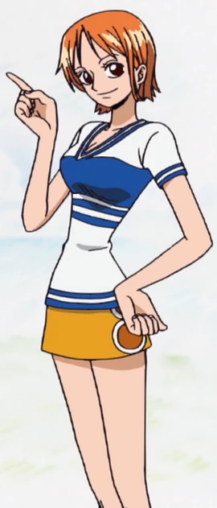

Quem é Nami
Nami é uma órfã de guerra do Reino de Oykot e foi encontrada ainda bebê por Bell-mère, que a levou para casa junto com Nojiko. Elas se tornaram verdadeiramente uma família.
Ela começa a roubar ainda criança… Nami se apaixonou por mapas e por desenhá-los, mas como sua nova família era pobre, ela não tinha condição de comprar os livros de cartografia para estudar. Isso levou a garotinha a roubar a livraria da cidade, mas foi repreendida por Bell-mère assim que foi descoberta roubando.
É nessa época que o pirata Arlong toma para si as Ilhas Conomi e chega até a Vila de Cocoyasi, onde começou a cobrar impostos abusivos para os moradores do local. Como não tinha condições de pagar, Bell-mère foi usada como exemplo para pôr medo nos habitantes e acabou sendo assassinada na frente de Nojiko e Nami.
Pra piorar, Nami é sequestrada e forçada a se tornar a cartógrafa do homem que matou sua mãe. Porém, o homem-peixe faz um acordo com a garota: se ela lhe trouxesse 100.000.000, ele libertaria sua aldeia. É a partir daí que ela começa a roubar ainda mais para arrecadar essa quantia e libertar sua antiga vila.
Com a ajuda de seus novos companheiros que ela conheceu eles derrotam o pirata que havia invadido sua cidade natal e é graças a essa ajuda que a garota se junta definitivamente ao novo bando de piratas que o do luffy.
Nami tem o sonho de um dia desenhar um mapa do mundo inteiro e desde que se tornou uma pirata sua recompensa é de 66.000.000.
Como é a aparencia dela?

Nami é uma jovem esbelta de estatura média, com cabelo laranja e olhos castanho claros. Muitas pessoas a consideram muito atraente ou mesmo bonita. Ela tem uma tatuagem preta (azul no anime) em seu ombro esquerdo, que representa laranjeiras e cata-ventos (uma homenagem a Bell-mère, Nojiko e Genzo, respectivamente), onde ela costumava ter uma tatuagem para ser um membro da tripulação de Arlong.
Seu físico geral amadureceu de repente (embora seja, provavelmente, uma simples mudança no estilo de obras de arte). Sua forma muda frequentemente assim como seu estilo de cabelo. Muitas de suas camisas caracterizam palavras de quatro letras, como "MODE", "GOLD" ou "EVIL", semelhante a uma camisa que Bell-mère usava tinha como estampa a palavra "MACE" nela. No pulso esquerdo, ela usa o Log Pose, que ela precisa para ser a navegadora do navio, e uma pulseira de ouro, dada a ela por sua irmã, Nojiko. Após o Arco Arlong Park, Nami muda de peças frequentemente, em uma variedade de roupas da série para cada arco, e geralmente, ela usa pares de tops com saias que têm dois anéis nas laterais. Seus sapatos de marcas registradas são de cor laranja e sandálias de salto alto de gladiadores. Nami usa alguma forma de salto alto em cada arco, e enquanto eles fazem seu salto mais alto na animação, eles não parecem afetar a forma como ela anda ou corre. Embora ela tende a arrumar seu cabelo ordenadamente, ocasionalmente um fio de cabelo no topo da cabeça dela pode pode formar em um topete bagunçado.
Ela usa uma cinta em torno de sua coxa com três slots em que cada um ela mantém cada pólo do seu Clima-Tact.
Personalidade dela
No início da série Nami desprezava piratas, se aproximando deles unicamente para furtar seus tesouros. Até que conheceu Luffy, o primeiro pirata diferente do que ela estava acostumada, mas a garota sabe que nem todos os bandidos são como seus colegas de bando. De acordo com Oda – autor da série – ela é a terceira personagem mais inteligente do East Blue, ficando atrás apenas de Benn Beckman, dos Piratas do Cabelo Vermelho e do Capitão Kuro.
Como sofreu muito quando ainda era uma criança, ela carrega traumas até hoje e por isso tem uma grande desconfiança em relação aos homens-peixes e rancor contra Arlong. Suas lembranças são muito dolorosas para ela, mas a personagem as evita bastante.
Nami também está sempre disposta a defender sua equipe e aquilo que julga como correto, um exemplo é a forma como ela tenta convencer Luffy em situações que percebe um lugar perigoso e lhe explica que não seria boa ideia ir até lá. Mas ainda assim, a garota prioriza as ordens de seu capitão e faz o que Luffy lhe pedir como navegadora.
Ela também é um pouco agressiva, batendo na tripulação com frequência quando percebe seus companheiros agindo de forma precipitada. Seu amor por dinheiro também é uma característica notável, já que ela está sempre disposta a fazer quase tudo por riquezas.
Todas as recompensas da Nami
- 366,000,000 Berries
- 66,000,000[ Berries
- 16,000,000 Berries
Primeira recompensa
Por derrotar Kalifa da CP9, recebeu sua primeira recompensa de $16.000.000.
Segunda recompensa
Por ser membro do bando, aumentou sua recompensa para $66.000.000.
Terceira recompensa
É a atual recompensa e conseguiu ajudando em onigashima na batalha e ajudar a libertar Wano e por Luffy ser um imperador conseguiu a recompensa $366.000.000
Habilidades da Nami
Nami é a navegadora oficial dos Chapéu de Palha, ou seja: ela é a responsável por direcionar o navio durante a navegação. Mas antes de Sanji se juntar ao grupo, Nami também já ocupou a cozinha e demonstrou ter alguns conhecimentos sobre culinária. De vez em quando ela volta a esse papel de chefe, mas na maioria das vezes é quando o próprio Sanji não está.
Já as habilidades físicas são resultado de uma vida de roubos e fugas. Ela já se mostrou extremamente ágil e veloz, além de ter uma grande força quando está enfurecida (um exemplo de força é que seus socos conseguem deixar até mesmo Luffy com alguns roxos pelo corpo). Ela pode até não ser tão forte quanto seus companheiros, mas se sai bem contra inimigos não tão poderosos.
Suas capacidades como navegadora também são admiráveis, uma vez que a personagem consegue realizar cálculos rápidos para tomar decisões de rota de navegação e ela junta esses conhecimentos com um “dom natural” de sentir mudanças do clima com reações no seu corpo. Essa combinação de navegação e noção de clima fez dela uma ótima meteorologista também.
Além de tudo isso, ela se mostrou ótima em outros aspectos como: conhecimentos financeiros, negociação e na “Arte do Clima“, que é a sua técnica e consiste em manipular o clima ao seu redor. A combinação de sua inteligência, habilidades de navegação, conhecimento sobre o clima e essa técnica pode ser uma arma poderosa.